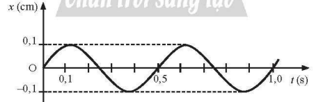
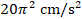
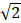
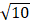
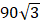

. Biên độ dao động của vật là bao nhiêu cm?
cm. Ở vị trí vật có vận tốc 10
cm/s thì gia tốc lúc này có độ lớn là bao nhiêu m/s$^2$? (Kết quả làm tròn đến 1 chữ số thập phân sau dấu phẩy)
cm/s$^2$. Biên độ dao động của chất điểm là bao nhiêu cm.Nhập thông tin để hệ thống ghi nhận kết quả.